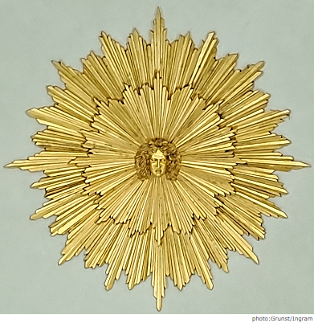

Sunburst inside the dome of the Temple of Apollo at Stourhead, Wiltshire, England.
This is an example of a well-known optical illusion:
Time stands still, but the image seems to rotate slightly left and right.
The effect is very strong at Stourhead, probably owing to the lighting and distance from the viewer.
Apollo, leader of the Muses,
links culture to eternity. Transcending the flow of time...